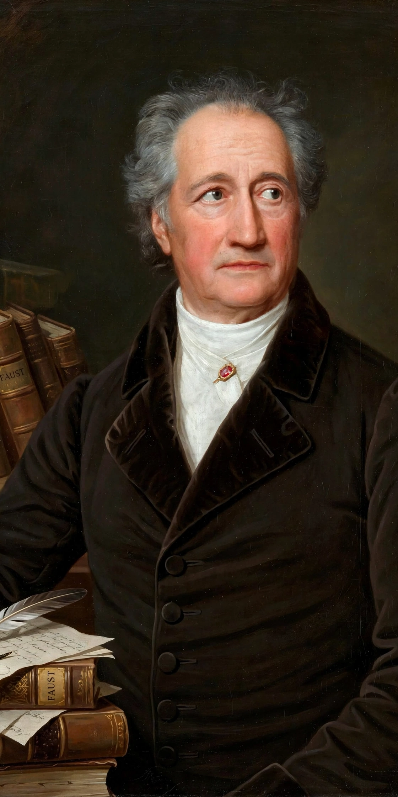

German literature comprises the written works of the German-speaking peoples of central Europe, from the earliest Old High German texts of the early Middle Ages to the present. Its high points include the medieval courtly epics, the works of Martin Luther whose Bible translation standardised the German language, the Weimar Classicism of Goethe and Schiller, the Romantic movement, and the modern fiction of Thomas Mann, Franz Kafka, Hermann Hesse and Günter Grass. German-language authors have won numerous Nobel Prizes in Literature.
| Language | German (Old, Middle and New High German) |
|---|---|
| Earliest texts | Hildebrandslied (c. 830) |
| Medieval classics | Nibelungenlied; Parzival; Tristan |
| Golden age | Weimar Classicism (c. 1772–1805) |
| Major figures | Goethe, Schiller, Kafka, Mann, Brecht, Grass |

Old High German literature (c. 750–1050) begins with glosses, charms such as the Merseburg Incantations, and the heroic lay of the Hildebrandslied. Middle High German (c. 1050–1350) produced the great courtly flowering: the Nibelungenlied, Wolfram von Eschenbach's Parzival, Gottfried von Strassburg's Tristan, and the Minnesang lyrics of Walther von der Vogelweide.
Martin Luther's translation of the Bible (New Testament 1522; complete Bible 1534) gave German a standard written form and immense literary influence. The Baroque era answered the devastation of the Thirty Years' War with Andreas Gryphius's sonnets and Grimmelshausen's picaresque novel Simplicissimus (1668).
Gotthold Ephraim Lessing led the German Enlightenment with plays such as Nathan the Wise (1779). The Sturm und Drang movement elevated feeling and genius; Goethe's The Sorrows of Young Werther (1774) made him famous across Europe. In Weimar, Goethe and Friedrich Schiller forged the classical ideal — Goethe's Faust, completed in 1832, is the most revered work in German literature, and Schiller's dramas (including William Tell) and his "Ode to Joy" remain canonical. Hölderlin, Kleist and Jean Paul are major contemporaries.
German Romanticism — Novalis, the Schlegels, E. T. A. Hoffmann, Eichendorff, and the Brothers Grimm's fairy tales — shaped European culture. Heine bridged Romanticism and political verse. The nineteenth century's realist novelists and poets include Theodor Fontane (Effi Briest), Gottfried Keller and Adalbert Stifter; Büchner anticipated modern drama.
Modernism brought Thomas Mann (Buddenbrooks, The Magic Mountain), Hermann Hesse, Robert Musil, Kafka's visionary fiction (in Prague German), Expressionist poetry, and Brecht's epic theatre. Under Nazism many writers went into exile. After 1945, the Gruppe 47, Heinrich Böll, Günter Grass (The Tin Drum), Christa Wolf and W. G. Sebald defined postwar writing in West and East Germany; Herta Müller and others continue the tradition in a unified Germany.